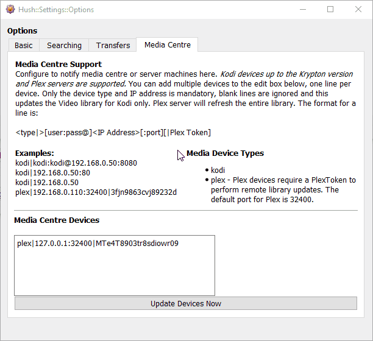

Hush offers an option to tell your media network devices when new content is added to your Library Location. This will make the media centre device scan for, or become aware of new content as it is downloaded and removes the need for you to manually scan for new content. At time of writing, it supports notifying Kodi device up to Krypton version, and Plex Media Server.
Media Centre Devices will be notified every time new content is moved into its configured Library Location.
The Automatically move media files to Library location and Automatically update Media Centre devices options must be ticked for Media Centre Device updates to work.
The above animation shows how to configure your Media Centre devices.
Media Device Types that are supported are Kodi - up to Krypton version, and Plex Media Server.
The edit box allows you to enter the details for each Media Device that you want notified about new content. Each line represents a single device.
The Media Centre Device syntax is as follows:
<type|>[user:pass@]<IP Address>[:port][|Plex Token] < > - denotes that the item is required [ ] - denotes that the item is optional or not required for all configurations Note: any special characters like : @ | that are shown inside < > and [ ] characters are required
You have a Kodi device and its IP address is 192.168.1.50. It is configured to listen for remote control access on port 8080. You have set the username and password for remote control access to
andy and MyPa55W0rD. You would enter the following for the Media Centre Device config line:
kodi|andy:MyPa55w0rD@192.156.1.50:8080
You have a Plex Media Server running on the same machine as Hush, using the default port for Plex. Your Plex Auth Token is suN6ap8BHWo3cc0ImNtQ. You would enter the following for the
Media Centre Device config line:
plex|127.0.0.1:32400|suN6ap8BHWo3cc0ImNtQNote: you must still provide the port number even if you are using the default port for the server software.
Blank lines in the edit area are ignored.
Any line that fails to parse using the expected formatting rule will be ignored.
You can configure as many Media Centre Devices as you like, just add one line per device.
Devices can be accessed via Internet as well, as long as the device is accessible via your network you can notify it from anywhere.
Plex devices must have a Plex Authentication Token to work.
Pressing this button will trigger Hush to send messages to all configured Media Centre Devices immediately.